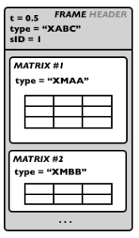

Introduction to SDIF
In this section we give a general introduction of the main SDIF concepts required to understand and make an efficient use of the OM SDIF tools.
SDIF Frames and Streams
SDIF is a binary format where data are encoded in time-tagged FRAMES .
"Time-tagged" means each frame embeds its own time localization and there is no global (regular) sample rate for the data flow. Each frame has a header , where the time-tag as well as other information are stored, and contain a certain amount of data.
The next paragraphs explicit the additional data contained in the SDIF frame headers.
The frame TYPE allows to determine the contents of the frame and the structure of the data it contains. SDIF types are identified by a signature of 4 ASCII characters.
Examples of standard SDIF frame types are for instance "1TRC" (sinusoidal tracks, used for additive sound descriptions), "1MRK" (markers), "1FQ0" (fudamental frequency), "1ENV" (spectral envelope) etc.
Each frame also has a stream ID ( sID ). It is therefore possible to store several interleaved frame streams (connected by their common stream ID and frame type) in a same SDIF file.
Stream ID and frame type will be crucial information to access and read the data in SDIF files.
Below are two examples of interleaved SDIF streams.
In the first example frames are divided in 2 streams and of identical types. This could be for instance the result of the same analysis of different parallel audio tracks.
Note that the frames time-tags are not necessarily synchronous nor strictly interleaved (they must only be in ascending temporal order). Reading applications should handle and manage the stream separation using the frame stream IDs.
In the second examples frames are different in the two streams (type "XAAA" in stream 0, and type "XBBB" in stream 1). This can be for instance the results of several analyses of a same sound extract, or even completely unrelated data merged in a same sequence of frames and in the SDIF file.
SDIF Data/Matrices
Within every SDIF frame, the actual data is stored in bidimensional matrices. A frame can contain one or several matrices. Each matrix is an array of data preceded (like SDIF frames)by a "matrix header" containing some general information. In particular, each matrix also has a TYPE (signature of 4 characters) used to identify the nature of the data it contains. By conventions, the columns of the SDIF matrices are called fields : they correspond to the different parameters of a given description. For instance, sinusoidal tracks matrices (type "1TRC") have 4 fields describing partials : index, frequency, amplitude, phase. Matrix lines are called components . There is a fixed number of fields in a matrix, but there can be any number of components. As matrices are embedded in time-tagged frames, this description is supposed to be at one particular time. In other words, SDIF matrices contain the value of a given set of parameters for a number of components at the time determined by their containing frame. |  |
SDIF Types
The SDIF signatures define types for frames and matrices, that is, it informs about the data contained in these structures.
Concretely, the frame types list the possible of matrix types found in the frame,a nd the matrix types list the matrix fields' names.
A set of SDIF types exist by default. Others can be declared in the SDIF files.
An informative list of standard types is provided at http://sdif.sourceforge.net/standard/types-main.html
SDIF Frame type declarations indicate a type signature and a set of allowed matrix types.
SDIF Matrix type declarations indicate a type signature and an ordered list of fields.
By convention, standard SDIF types' first character is a version number (most often, "1"), while experimental types start with an "X".
It can happend (and is correct) that a frame and matrix type have the same signature.
In addition to type declaration, it is also possible to declare extensions of existing SDIF types, for instance, in order to add fields n a given matrix type, or to add matrices in a frame type.
Examples of Common Standard SDIF Descriptions
Here is a set of common sound descriptions used in musical applications.
The fundamental frequency estimation is one of the simplest sound descriptions : it generally has one single field (the frequency) and one single component. The fudamental frequency matrix type signature is "1FQ0". It ususally has one single field (frequency) : here is what the type declaration looks like : 1FQ0 { frequency } Sometimes the fundamental frequency description can involve additional parameter. The standard matrix type definition is actually of the form : 1FQ0 { frequency, confidence, score, realamplitude} The fudamental frequency frame type signature is also "1FQ0". 1FQ0 frames only contain one 1FQ0 matrix. The type declaration is therefore of the form : 1FQ0 { 1FQ0 FundamentalFrequencyEstimate} |
The partials are described frame by frame in SDIF. In each frame, the parameters are described for each partial, which is identified by a unique index. The partials matrix type signature is "1TRC". The standard matrix type definition is of the form : 1TRC { index, frequency, amplitude, phase } An arbitrary number of partials can de stored in every matrix. The partials frame type signature is also "1TRC". 1TRC frames only contain one 1TRC matrix. The type declaration is therefore of the form : 1TRC { 1TRC SinusoidalTracks} |  |
Harmonic partials are stored exactly like partials in frames / matrices of type "1HRM"
Markers are simple time information. They are generally stored in frames of type "1MRK" with adequate time-tag.
It is often the case, however, that markers embed additional data and information. In particular, transient detection markers differentiate begin and end of the transients. In this case, beginning marker frames contain a matrix of type "1BEG", while end markers contain matrix of type "1END".
1BEG and 1END matrices contain ID values (matrix 1 x n ).
Chord-Sequence analysis or descriptions are not straightforward to embed in SDIF, since they are closer to "symbolic" (MIDI-like) data than signal descriptors. They can however be stored efficiently using markers and 1MRK frames. Following the model of the SDIF partials, each "note" in such analysis is identified by a unique ID. The marker frames will then contains, at a given time:
Note that a same 1MRK frame does not necessarily contain both 1BEG and 1END matrices. |